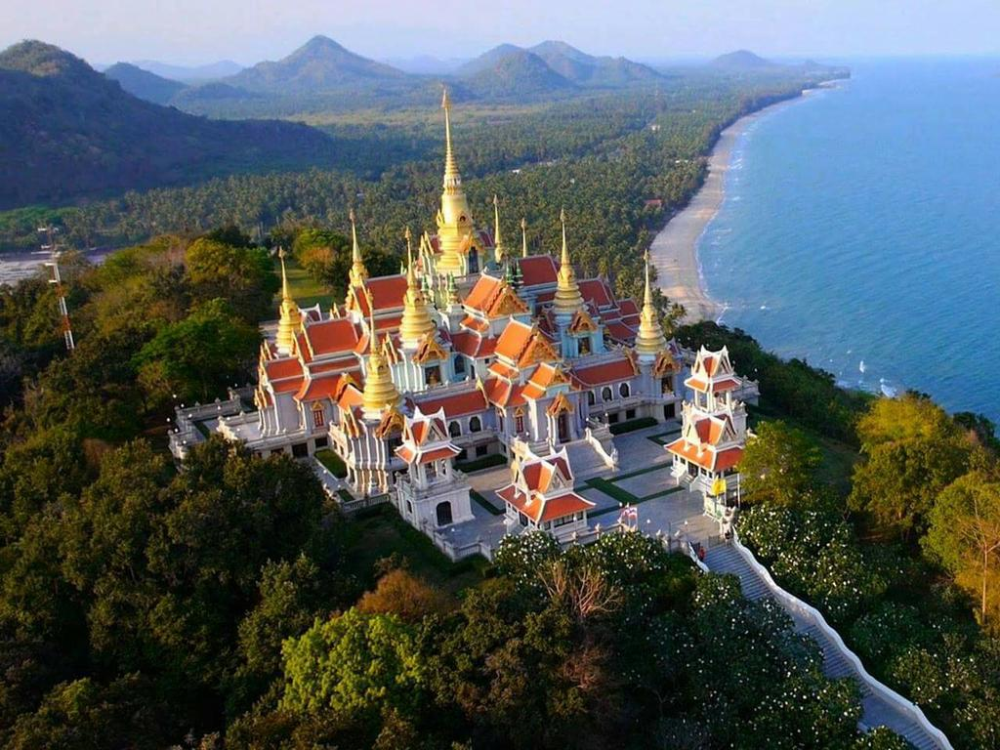
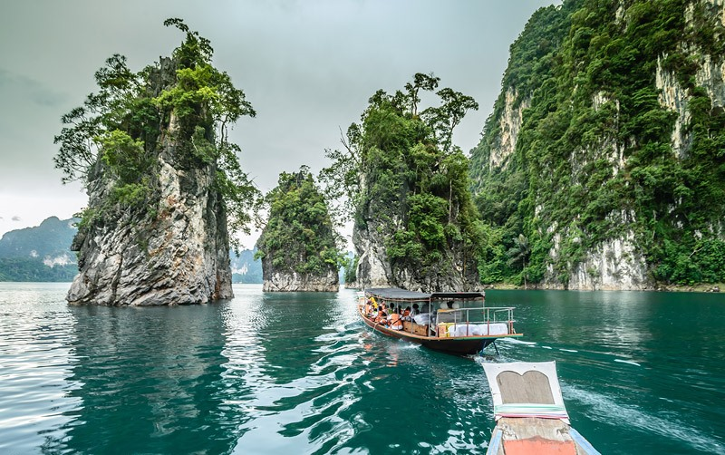
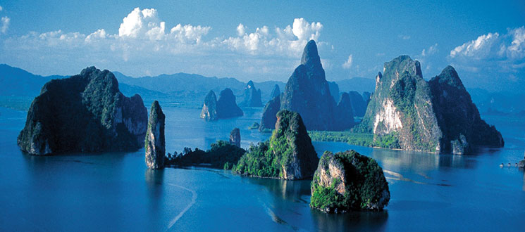
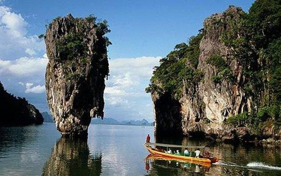
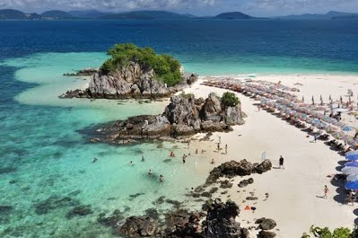
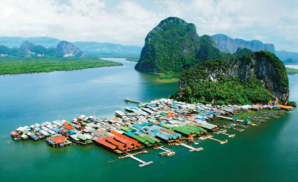
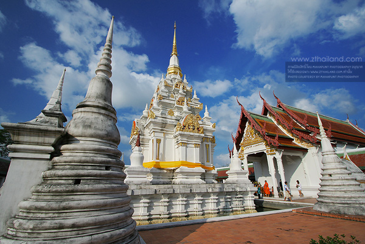

ดรรชนี
สถานที่ท่องเที่ยวทั้งหมดตามลำดับ
- วัดขนอน(หนังใหญ่)
- Secret space
- Cicada market
- วัดเขาช่องกระจก
- เขาล้อมหมวก
- อ่าวมะนาว
- พระมหาธาตุเจดีย์ภักดีประกาศ
- หาดผาแดง
- เขื่อนรัชชประภา
- เสม็ดนางซี
- วัดถ้ำสุวรรณคูหา
- อุทยานแห่งชาติอ่าวพังงา
- สวนโมกขพลาราม
- วัดพระบรมธาตุไชยาราชวรวิหาร
- วัดพระธาตุสวี
ที่พักทั้งหมดพร้อมราคา
- (950 Baht) Safehouse Hostel
- (1500 Baht)Paragon Hometel
- (1600 Baht)เสม็ดนางซี บูทีค
- (1200 Baht)โรงแรมราชธานี
เวลา
กิจกรรม
สถานที่
เวลา
กิจกรรม
สถานที่
ศุกร์ 13 เมษายน '61
10:00 น. - 14:00 น.
เดินทางไปยัง วัดขนอน(หนังใหญ่)
บ้านตากอากาศ - วัดขนอน(หนังใหญ่)
15:00 น. - 16:25 น.
เดินทางไปยัง Secret Space
วัดขนอน(หนังใหญ่) – Secret space

17:00 น. - 19:15 น.
เดินทางไปยัง Cicada Market
Secret space - Cicada Market
20:45 น. - 22:00 น.
เดินทางไปยัง Safehouse Hostel
Cicada Market - Safehouse Hostel
เสาร์ 14 เมษายน '61
07:30 น. - 07:35 น.
เดินทางไปยัง วัดเขาช่องกระจก
Safehouse Hostel - วัดเขาช่องกระจก
09:00 น. - 09:15 น.
เดินทางไปยัง เขาล้อมหมวก
วัดเขาช่องกระจก - เขาล้อมหมวก
12:00 น. - 12:50 น.
เดินทางไปยัง พระมหาธาตุเจดีย์ภักดีประกาศ
อ่าวมะนาว - พระมหาธาตุเจดีย์ภักดีประกาศ
12:50 น. - 14:00 น.
เที่ยวชม พระมหาธาตุเจดีย์ภักดีประกาศ

ดูเพิ่มเติม
พระมหาธาตุเจดีย์ภักดีประกาศ
14:00 น. - 15:40 น.
เดินทางไปยัง หาดผาแดง(Red Cliff Beach)
พระมหาธาตุเจดีย์ภักดีประกาศ - หาดผาแดง(Red Cliff Beach)
16:25 น. - 20:00 น.
เดินทางไปยัง Paragon Hometel
หาดผาแดง(Red Cliff Beach) - Paragon Hometel

อาทิตย์ 15 เมษายน '61
08:00 น. - 09:10 น.
เดินทางไปยัง เขื่อนรัชชประภา
Paragon Hometel - เขื่อนรัชชประภา
09:10 น. - 15:30 น.
เที่ยวชม และรับประทานอาหารกลางวัน @ เขื่อนรัชชประภา

 ดูเพิ่มเติม
ดูเพิ่มเติม
ดูเพิ่มเติม
เขื่อนรัชชประภา
15:00 น. - 17:05 น.
เดินทางไปยัง เสม็ดนางซี บูทีค
เขื่อนรัชชประภา - เสม็ดนางซี บูทีค
17:05 น. - 17:20 น.
เข้าที่พัก เสม็ดนางซี บูทีค
เสม็ดนางซี บูทีค
17:20 น. - 18:30 น.
ชมพระอาทิตย์ตกดิน และเที่ยวชมวิว @ จุดชมวิวเสม็ดนางซี
ดูเพิ่มเติม
จุดชมวิวเสม็ดนางซี หรือที่พัก
18:30 น. - 07:30 น.
รับประทานอาหารเย็น และพักผ่อน @ เสม็ดนางซี บูทีค
 ดูเพิ่มเติม
ดูเพิ่มเติม
ดูเพิ่มเติม
จุดชมวิวเสม็ดนางซี หรือที่พัก
จันทร์ 16 เมษายน '61
08:00 น. - 08:40 น.
เดินทางไปยัง วัดถ้ำสุวรรณคูหา
เสม็ดนางซี บูทีค - วัดถ้ำสุวรรณคูหา
09:40 น. - 10:00 น.
เดินทางไปยัง อุทยานแห่งชาติอ่าวพังงา
วัดถ้ำสุวรรณคูหา - อุทยานแห่งชาติอ่าวพังงา
10:00 น. - 17:00 น.
เที่ยวชม อุทยานแห่งชาติอ่าวพังงา




ดูเพิ่มเติม
อุทยานแห่งชาติอ่าวพังงา
17:00 น. - 19:10 น.
เดินทางไปยัง ร้านกะปิ
อุทยานแห่งชาติอ่าวพังงา - ร้านกะปิ
20:00 น. - 20:05 น.
เดินทางไปยัง โรงแรมราชธานี
ร้านกะปิ - โรงแรมราชธานี
อังคาร 17 เมษายน '61
08:00 น. - 08:50 น.
เดินทางไปยัง สวนโมกขพลาราม
สวนโมกขพลาราม
10:00 น. - 10:10 น.
เดินทางไปยัง วัดพระบรมธาตุไชยาราชวรวิหาร
สวนโมกขพลาราม - วัดพระบรมธาตุไชยาราชวรวิหาร
10:10 น. - 11:10 น.
เที่ยวชม วัดพระบรมธาตุไชยาราชวรวิหาร

ดูเพิ่มเติม
วัดพระบรมธาตุไชยาราชวรวิหาร
11:10 น. - 12:30 น.
เดินทางไปยัง วัดพระธาตุสวี
วัดพระบรมธาตุไชยาราชวรวิหาร - วัดพระธาตุสวี
_ชุมพร.jpg)
13:30 น. - 22:30 น.
รับประทานอาหารกลางวันกับอาหารเย็น และเดินทางไปยัง หอพุทธชาด
วัดพระธาตุสวี - หอพุทธชาด
22:30 น. - 02:00 น.
เดินทางไปยัง บ้าน
หอพุทธชาด - บ้าน